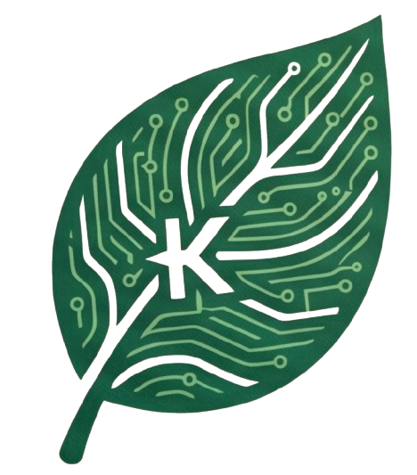

kFarm
AI
AI FARM COMMUNITY
☰
NEWS & SUBSIDY
관련소식
📋 정부보조사업
📰 농업뉴스
📢 수도용 상토 보조사업 공고 수집 중
전국 지자체별 보조사업 정보를 수집 중입니다. 2026년 하반기 서비스 예정.
충청남도 홍성군
공고문 →
2026년 수도용 상토 보조사업 공고
신청기간: 2026.01.15 ~ 02.28
충청남도 부여군
공고문 →
2026년 수도용 상토 구입비 지원사업
신청기간: 2026.01.20 ~ 03.10
제목 클릭 시 해당 신문사 홈페이지로 이동합니다
🌾
농민신문
농민신문 바로가기
www.nongmin.com
📰
한국농어민신문
한국농어민신문 바로가기
www.agrinet.co.kr
📰
한국농업신문
한국농업신문 바로가기
www.newsfarm.co.kr
📰
농업정보신문
농업정보신문 바로가기
www.nongup.net
🧪
농기자재신문
농기자재신문 바로가기
www.newsam.co.kr
🧪
영농자재신문
영농자재신문 바로가기
www.newsfm.kr
👨🌾
농업인신문
농업인신문 바로가기
www.nongupin.co.kr
🐄
농수축산신문
농수축산신문 바로가기
www.aflnews.co.kr
📋
한국농정신문
한국농정신문 바로가기
www.ikpnews.net
홈
농약사 찾기
상토
종자
작물보호제
비료
kFarm
AI
AI FARM COMMUNITY
✕
홈
농약사 찾기
상토
종자
작물보호제
비료